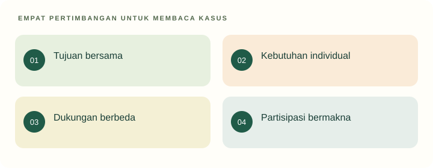

Tujuan pembelajaran
- Menjelaskan DAP dan perbedaan kesetaraan dengan dukungan yang adil.
- Merancang relasi yang memberi partisipasi sekaligus batas yang jelas.
- Membedakan pengamatan pendidikan dari diagnosis.
Apakah memperlakukan semua anak sama selalu berarti adil?
Pada kegiatan bercerita, guru mewajibkan semua anak berbicara sendiri selama dua menit. Anak yang baru mengenal bahasa Indonesia memilih menunjukkan gambar. Guru menolak karena aturan harus sama untuk semua.
Temukan persoalan konseptual
Sebelum membaca penjelasan, pisahkan kejadian yang dinyatakan dalam kasus dari dugaan Anda. Gunakan pertanyaan berikut untuk menyiapkan analisis.
- Apa tujuan pendidikan yang sedang dipertaruhkan?
- Pengalaman apa yang dialami anak, dan informasi apa yang belum tersedia?
- Konsep atau jenis sumber apa yang diperlukan untuk menilai tindakan pendidik?

Anak sebagai pelaku
Menempatkan anak sebagai subjek berarti mengakui minat, pengalaman, tindakan, dan suaranya dalam pendidikan. Guru tetap memiliki tanggung jawab dan tujuan. Relasi pedagogis bukan hubungan tanpa batas, melainkan hubungan yang mengarahkan perkembangan melalui penghormatan dan dukungan.
Pada contoh kegiatan cerita, tujuan komunikasi dapat dicapai melalui beragam bentuk awal. Menunjuk gambar dapat menjadi pintu masuk percakapan. Guru dapat membantu dengan pertanyaan atau kesempatan bersama teman. Fleksibilitas cara tidak sama dengan menghilangkan tujuan.
DAP dan keragaman
NAEYC (2020) mengajukan tiga pertimbangan DAP: pola umum perkembangan, individualitas, dan konteks sosial-budaya. Artinya, kesesuaian praktik tidak dapat ditentukan oleh usia saja. Kerangka ini digunakan sebagai alat profesional, bukan pengganti regulasi Indonesia.
Sebagai aplikasi, mahasiswa dapat memeriksa tuntutan kegiatan terhadap bahasa, gerak, pengalaman, dan rasa aman. Seorang anak mungkin memahami cerita tetapi belum nyaman tampil di depan kelompok. Bukti pemahaman dan keberanian tampil perlu dipisahkan agar penilaian tidak menghukum perbedaan yang tidak berkaitan dengan tujuan utama.
Adil tidak selalu seragam
Perlakuan sama memberi bentuk yang sama kepada semua orang. Dukungan yang adil mempertimbangkan hambatan agar kesempatan berpartisipasi menjadi bermakna. PP 13/2020 memberi landasan akomodasi yang layak bagi peserta didik penyandang disabilitas. Namun, setiap penyesuaian harus terkait kebutuhan, bukan asumsi bahwa semua anak dengan label tertentu sama.
Usulan contoh: gambar penunjang, waktu tunggu, pilihan alat yang mudah digenggam, atau posisi yang memudahkan mendengar. Tentukan tujuan yang dipertahankan dan dukungan yang diubah. Jangan menggunakan akomodasi sebagai alasan mengecualikan anak dari seluruh aktivitas bersama.
Batas, emosi, dan kewenangan
Ketika anak memukul, pendidik menghentikan tindakan yang membahayakan dan menjaga anak lain. Setelah situasi cukup tenang, bantu anak menyampaikan kebutuhan dan memperbaiki dampak. Mengakui emosi tidak berarti membenarkan semua tindakan. Contoh kalimat: kamu kecewa, tetapi aku tidak membiarkan teman dipukul; mari cari cara meminta giliran.
Guru mencatat perilaku dalam situasi tertentu, bukan menetapkan identitas seperti nakal atau tidak normal. Bila kesulitan berulang memerlukan dukungan lain, komunikasikan pengamatan kepada keluarga dan ikuti jalur rujukan lembaga. Diagnosis merupakan kewenangan profesional terkait, bukan hasil latihan kuliah ini.
Kembali ke kasus
Aturan seragam menghambat tujuan komunikasi ketika bentuk tampil menjadi satu-satunya ukuran. Guru dapat menerima gambar sebagai respons awal dan membantu perluasan bahasa. Periksa perkembangan melalui beberapa kesempatan, tanpa langsung menyimpulkan keterlambatan.
Analisis ini merupakan contoh penalaran pedagogis. Pada situasi nyata, keputusan memerlukan informasi tentang anak dan konteks lembaga.
Latihan terbimbing
Bandingkan dua respons: “semua harus bicara sekarang” dan “kamu boleh mulai dari gambar ini”. Jelaskan tujuan yang sama, bantuan yang berbeda, serta bukti yang masih perlu dikumpulkan.
Latihan mandiri
Analisis kasus anak yang menolak kegiatan kelompok. Tulis tiga kemungkinan penjelasan tanpa diagnosis, informasi yang diperlukan, serta dukungan awal yang aman dan dapat ditinjau.
- Konsep digunakan dengan tepat dan dijelaskan hubungannya dengan kasus.
- Fakta dipisahkan dari interpretasi; sumber mendukung jenis klaimnya.
- Tindakan konkret, menghargai anak, dan memiliki cara peninjauan.
Lihat pembahasan
Hambatan partisipasi dipertimbangkan dan dukungan disesuaikan.
Tujuan dapat dipertahankan sambil mengubah akses dan bentuk dukungan sesuai kebutuhan.
Refleksi calon pendidik
Aturan mana yang saya pertahankan karena kebutuhan belajar, dan mana yang hanya memudahkan orang dewasa?
Catatan hanya disimpan di peramban ini. Tidak dikirim kepada dosen.
Intisari dan tindak lanjut
- Anak sebagai subjek memiliki suara dan kesempatan bertindak dalam batas yang aman.
- Kesesuaian praktik mempertimbangkan pola perkembangan, individu, dan konteks.
- Dukungan yang adil dapat berbeda tanpa menghilangkan tujuan bersama.
Uji kembali pemahaman di atas melalui latihan mandiri. Jika alasan Anda belum menghubungkan konsep dan tindakan, baca ulang submateri terkait sebelum menandai selesai.
Referensi dan bacaan pendamping
Sumber untuk klaim khusus disebut pada uraian. Buku pendamping tidak dikutip langsung. Jenis dan batas penggunaan setiap rujukan dijelaskan di bawah.
- National Association for the Education of Young Children. (2020). Developmentally appropriate practice: A position statement.Kerangka profesi berbasis riset, bukan regulasi Indonesia. Pertimbangkan pola perkembangan, individualitas, dan konteks. Ringkasan konsep tidak menggantikan dokumen asli.
- National Association for the Education of Young Children. (2022). Developmentally appropriate practice in early childhood programs serving children from birth through age 8 (4th ed.).Buku utama pendamping. Cakupan sampai usia 8 tahun berbeda dari definisi yuridis PAUD Indonesia; tidak direproduksi di portal.
- Republik Indonesia. (2020). Peraturan Pemerintah Nomor 13 Tahun 2020 tentang Akomodasi yang Layak untuk Peserta Didik Penyandang Disabilitas.Dasar akomodasi pendidikan; penerapannya memerlukan informasi kebutuhan individual.
- Republik Indonesia. (2014). Undang-Undang Nomor 35 Tahun 2014 tentang Perubahan atas Undang-Undang Nomor 23 Tahun 2002 tentang Perlindungan Anak.Dibaca bersama UU dasar dan perubahan berikutnya, termasuk UU 17/2016. Materi ini berfokus pada hak anak, bukan penetapan sanksi pidana.